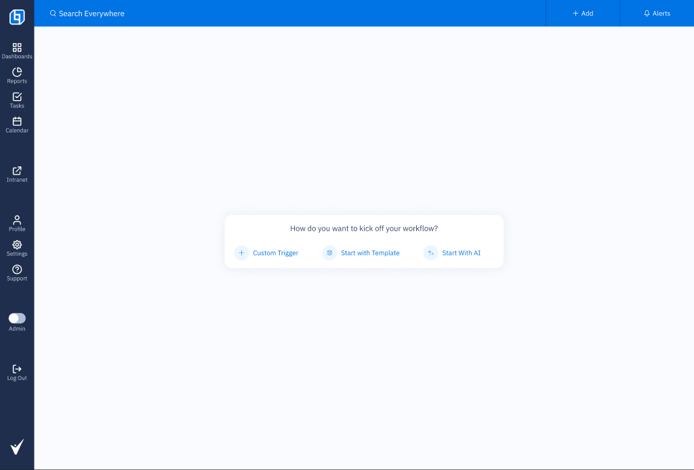
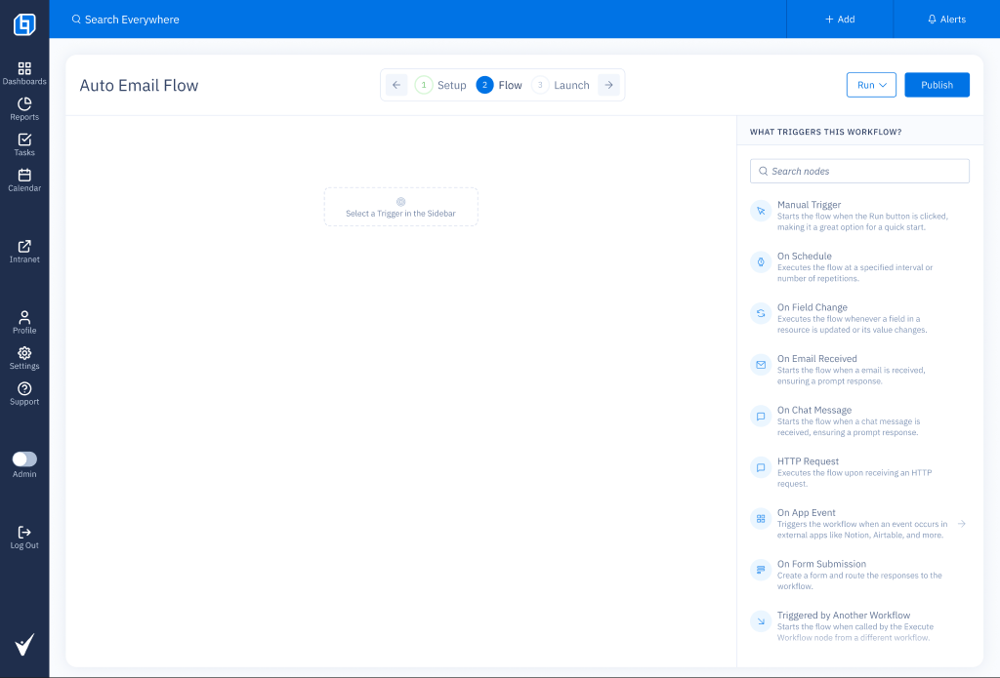
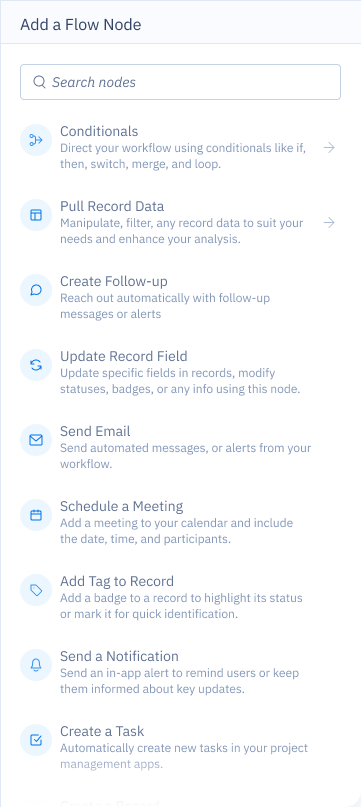
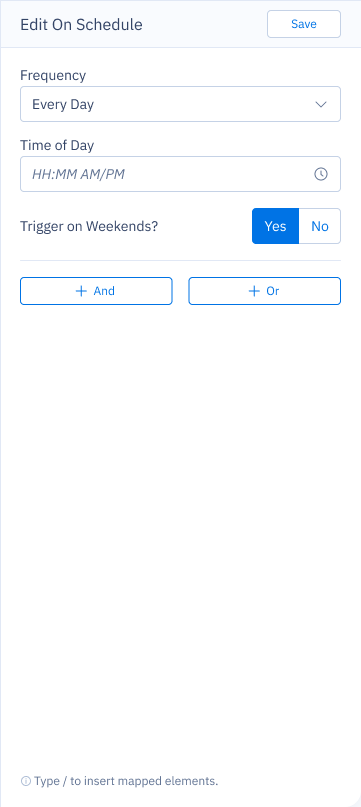
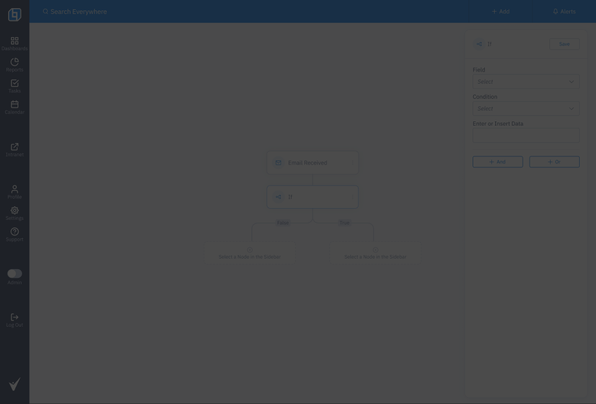
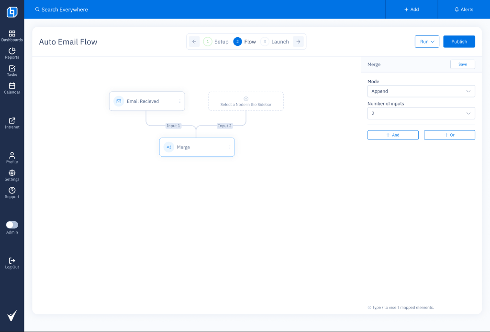

██████╗ ██████╗ ███████╗ ██╔══██╗██╔══██╗██╔════╝ ██████╔╝██║ ██║███████╗ ██╔══██╗██║ ██║╚════██║ ██║ ██║██████╔╝███████║ ╚═╝ ╚═╝╚═════╝╚══════╝
I design tools that make complex work feel simple.
// less noise, more flow
Work & Communication Hub

# how this started
Our best rep had seven product tabs open when I shadowed her one morning. She was sending a renewal reminder. She'd normalized it.
I spent two weeks shadowing five more people. Every one of them had built their own system: saved URLs, sticky notes, a shared spreadsheet one of them called "the graveyard." The product wasn't broken. It had just never been designed for this volume of work.
# what we measured before touching anything
I refused to open Figma until we had numbers. Every improvement had to map back to one of these.
# the design bet: one surface, always visible
We weighed three directions.
- A full-screen composer (what competitors do).
- A command palette ("cmd+k but for sending").
- A persistent dock at the bottom of the workspace.
We shipped option three. The composer tested fastest in isolation but broke the moment reps had to cross-reference client data mid-send. The command palette tested great with our three power users and poorly with everyone else.

The workbar stays visible across the whole workspace. You open a client, the workbar knows. You switch to a thread, it follows. Campaign and template live as dropdowns. Send lives there. That's the whole ceremony.
# speed work (the unpopular idea)
Power users kept telling us they didn't need the preview. They didn't need the confirm modal. They wanted a button that fired.
Building a "power mode" for 12% of users is a hard sell. It looks like scope creep. The pitch that landed wasn't "power users want this." It was: those 12% of users drive 58% of our sends. When they're slow, revenue is slow.

Speed Work is one toggle. On: no preview modal, optimistic send, a 5-second undo toast. Off: the default path, unchanged. No one was forced to use it. It spread anyway, user to user, the way good tools do.
# ownership (the thing I underestimated)
"Who's sending this one" sounded like a polish issue. It wasn't. I lost two weeks to it. In a team of 8 reps covering 400 clients, message authorship is a coordination problem, not a display problem.
We ended up with identity pills: avatar, name, role badge, visible in the composer, in the thread, and in the send receipt. It looks obvious in the final design. It took four rounds to get there.

# what shipped, what got cut
shipped
- persistent workbar
- speed work toggle
- identity pills across composer, thread, receipt
- preview with template variable diff
- undo toast (5s, keyboard shortcut)
cut / deferred
- scheduled send (engineering scoping risk)
- AI-suggested replies (not enough training data)
- manager analytics dashboard (out of scope)
- shared drafts (punted to v2)
# numbers, 90 days post-launch
# what I'd do differently
The first version of the workbar had too many features. I tried to solve three problems at once. We stripped it twice before launch and it still felt busy. Next time I'd start with a smaller workbar and earn the real estate.
I also shipped Speed Work without an onboarding flow, assuming it'd spread organically. It did, but slowly. A 20-second tooltip tour would have cut adoption time in half.
# credit
Shipped with 1 PM and 2 engineers. The workbar interaction model and identity system were my design. The Speed Work optimistic-UI behavior was a joint design with eng, who owned the reconciliation logic. Ownership pills live in the design system.
Report Builder

# the backstory
Every month, account managers pulled data out of the product, pasted it into slides, branded it, and emailed it to clients. Every month, something broke. Someone spelled Travelers as Traveler's. A KPI was from the wrong date range. A logo was outdated.
A previous team had shipped a form-based export tool. Nobody used it. Opening it was the running joke on the account team.
# what I did before designing anything
- Read 180 support tickets tagged "reporting."
- Sat with four account managers through a full monthly cycle (two weeks each).
- Pulled 12 real reports that had gone to clients and diffed them against the source data.
Three of twelve had numbers that didn't match our own database. Not because anyone was careless. The copy-paste window was just too wide.
# the bet: a canvas, not a form
The form-based version failed because forms force you to think in fields. Reporting is visual. You need to see the thing you're making.
We chose a three-panel canvas: section hierarchy on the left, live canvas in the middle, block settings on the right. Add a section. Drop in a chart block. Bind it to a query. Done.

The risk was that canvases invite Figma-level expectations. We scoped it hard: five section types, seven block types, no freeform positioning. If you wanted a custom layout, the answer was no. That was an unpopular stance and it held.
# versioning (the actually hard part)
I thought versioning would be a footer with a date. It took eight weeks.
The problem: a client asks in April for "the one from February." If we re-render live, the numbers have changed. Monthly premium went up. Three claims closed. It's not the same report. If we freeze it, we need a real versioning model with an immutable snapshot.
We built freeze dates. Pressing send creates a snapshot with the as-of date in the header and footer. A publishing-history timeline shows every version ever sent, who sent it, when, with a thumbnail. Any version can be previewed, re-sent, or forked into a new draft.
This is the feature that won the team over. Reports stopped being files in someone's inbox and started being records in the product.

# scheduling (almost got cut)
Scheduling kept almost getting cut. Engineering flagged risk three times. The PM pushed back twice.
I pushed for it because of one observation. The actual bottleneck on reporting wasn't writing the report. It was remembering to send it. 38% of delayed-report support tickets were "I forgot to send it on Friday."
It shipped. Recurring weekly and monthly, timezone aware, natural-language summary ("every first Monday at 9am ET"), one-click pause, next-send preview. Within three months, scheduling accounted for 72% of all sends.
# in-place chart editing
Small one, worth mentioning. Charts are editable directly on the canvas, not in a separate modal. Change the type, color, grouping, date range, live.
We built this because our earliest prototype had an "edit chart" modal and testing showed users opening it, closing it, opening it, closing it, just to double-check what the chart looked like against the rest of the page.

# numbers, 6 months post-launch
# what I'd do differently
I over-engineered the block types. We shipped seven. Users live inside three of them (KPI, table, chart). The other four are dead weight maintained at cost. Next time I'd ship three, wait six months, add based on what users actually ask for.
Publishing history is fine, but it should have been reachable from outside the builder. You still have to open a report to see its history. A portfolio-level "all reports ever sent" view is the first thing users ask for, and it's still on the backlog.
# credit
Shipped with 1 PM and 2 engineers (L and M). The block model and canvas interactions were my design. The freeze-date snapshot behavior was a joint design with L, who figured out how to make it actually immutable. The report structure became a template other teams now copy.
Workflow Automation Builder

# how this started
Every repetitive process the team ran lived in someone's head or someone's spreadsheet. Policy renewals due in 30 days: one account manager had a color-coded Excel file she ran every Monday. Claim status changes: copy-pasted into an email, manually. Inbound form submissions: forwarded to the right person, by memory.
Engineering had automated three things on request. All three were hardcoded and untouchable by anyone who wasn't a developer. One broke when the field it referenced got renamed. Nobody noticed for six weeks.
# what I mapped before opening Figma
I spent two weeks watching the team work. Not what they described in interviews. What they actually did.
The Zapier accounts were the signal. When people solve a problem outside the product with their own money, the product has failed them. They didn't need convincing. They needed something better.
# the design bet: graph, not recipe
Recipe-style automation (when X, do Y) would have covered about 70% of the use cases. The other 30% required branching: if a client responds within 48 hours, do this; if not, do that. For an insurance CRM, that 30% holds most of the actual value. Renewals are conditional. Claims routing is conditional. Everything downstream of an inbound request is conditional.
We went with a visual node graph.
The risk was complexity. These users were not developers. So we constrained it hard: nodes snap to a grid, edges draw themselves, the canvas opens on a single question before anything else appears.

# the trigger list (six weeks to define eight types)
We launched with eight triggers: Manual, On Schedule, On Field Change, On Email Received, On Chat Message, HTTP Request, On App Event, On Form Submission, Triggered by Another Workflow.
Getting there took six weeks and two rounds of user testing. "On Field Change" failed the language test. In early testing, 42% of users could explain what it would do from the label alone. We renamed it to "When a record is updated." In the second round, 89% got it right on first read. The naming was as much of a product decision as the feature itself.

# node config: always inline, never a modal
Each node opens its settings in a right panel that stays open. Not a modal, never a modal. Account managers need to look at other nodes in the canvas while they configure a new one. A modal blocks that. A panel doesn't.

Data mapping lets users pull values from upstream nodes into any text field via a "/" shortcut. It's the most powerful interaction in the product and the hardest to discover. We shipped a tooltip at launch. An interactive walkthrough would have been better.

# what the IF node taught me about naming
The branch node ships as "If." In testing we called it "Conditional," "Branch," "Route," and "Filter." "If" was the only name that didn't need a sentence of explanation after it.
The True/False labels on the output connectors caused the most confusion of anything in the product. We tested "Yes/No," "Match/No match," "Pass/Fail." Nothing landed cleanly. True/False survived because it's what people already knew from spreadsheet formulas and Zapier. Not great, but familiar. We kept it.

# what shipped, what got cut
shipped
- visual node canvas (drag, snap, auto-connect)
- 8 trigger types with inline config panels
- 9 action nodes (Send Email, Update Field, Follow-up, Create Task, and more)
- If / Merge / Switch / Stop & Error / Wait
- data mapping via "/" shortcut
- 3-step wizard: Setup, Flow, Launch
- 12 pre-built flow templates
- manual Run button for test execution
cut / deferred
- workflow run history and error logs
- version history for published flows
- AI-assisted flow generation (designed, not shipped)
- shared flow ownership (1 owner at launch)
- mobile trigger support
# numbers, 90 days post-launch
# what I'd do differently
Data mapping is the hardest interaction in the product and I gave it the least design time. The "/" shortcut works but it's nearly invisible. I'd spend a full sprint just on discoverability before shipping.
I'd also cut action nodes at launch. We shipped 9. Users live inside 4 of them (Send Email, Update Record Field, Create Follow-up, If). The other 5 are there and mostly ignored. Fewer nodes at launch means less to learn, fewer edge cases in QA, and a shorter list for people who are already overwhelmed.
And I'd ship run history on day one. Without it, debugging a broken workflow means re-running it manually and watching the canvas. That's fine for builders but terrible for the ops person who inherited a flow they didn't write.
# credit
Shipped with 1 PM and 3 engineers. The node model, canvas layout, and how triggers were named and organized were my design. Data mapping was a joint design with eng, who owned the underlying variable resolution. The conditional logic (If/Merge/Switch) went through four rounds before the True/False labeling settled. The 12 launch templates were written by two account managers who ran the beta.
whoami
I'm Ricardo. I design product & UX for software where the details actually matter: dense interfaces, complex flows, real users with real deadlines.
Five years at OneHQ shipping the surfaces customer teams live inside every day. Before that, freelance UI work and a long detour through visual design. I care about reducing friction without hiding complexity, and I think most "redesigns" are actually research problems in disguise.
# currently
# stack
// I build most prototypes now with agents in the loop. Faster iteration, more refined output. Designers who don't touch the pipe are about to fall behind.
say hi
I'm taking on selected work and chats. The fastest way in is the schedule link below.
// tip: type schedule to jump straight to the call link.